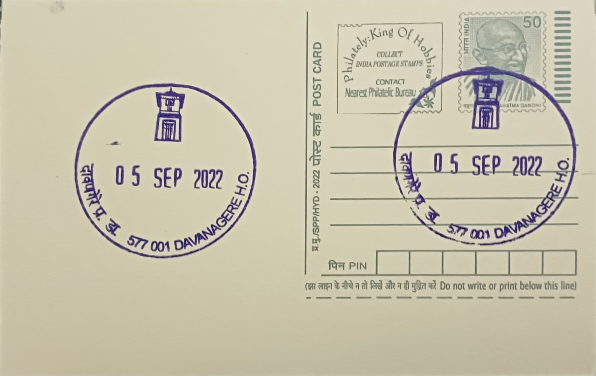

Sri Chennagiri Rengappa Clock Tower
ಶ್ರೀ ಚೆನ್ನಗಿರಿ ರೆಂಗಪ್ಪ ಗಡಿಯಾರ ಗೋಪುರ


The Sri Chennagiri Rengappa Clock Tower takes its name from a local figure remembered in Davanagere's civic memory as a benefactor whose standing in the town justified a public memorial of this kind, a pattern common across Karnataka and the wider Deccan where a merchant, landholder, or municipal patron financed a clock tower as a visible, lasting mark of personal contribution to the town's upkeep. Precise biographical detail on Rengappa himself is thin in surviving public record, consistent with many such local patrons whose names were attached to a single civic structure rather than to a documented public career, so the tower today functions as much as a place-name anchor for the surrounding locality as a record of the man it honours.
As a category of structure, the clock tower belongs to the broad class of nineteenth- and early twentieth-century Indian civic monuments erected at the commercial heart of growing market towns, typically funded by municipal boards, philanthropic residents, or trading guilds rather than by any single ruling authority. Its significance in Davanagere is primarily civic and locational rather than religious or architectural: the structure is referenced in municipal and postal records as a fixed orientation point in the city centre, to the extent that the road on which the Davanagere Head Post Office itself stands is identified in postal listings as Clock Tower Road, underscoring how thoroughly the monument has been absorbed into the city's everyday administrative geography.
Davanagere's emergence as a major centre of the cotton and textile trade from the colonial period onward, a status that earned it the regional nickname "the Manchester of Karnataka," created the commercial wealth and civic ambition that typically funded amenities of this kind in Central Maidan towns of the era: markets, schools, and timepiece towers built to serve a growing trading population clustered near the railway line and town centre. While the exact year of the tower's construction and the identity of its builder are not firmly documented in accessible records, its placement at a central road junction follows the standard template of such towers, built as a simple masonry structure topped with a four-faced clock mechanism intended to be visible and audible across the adjoining market and administrative streets.
A distinguishing feature of the Chennagiri Rengappa Clock Tower is less architectural than functional: its continued use as the namesake and locational marker for Clock Tower Road has made it a fixture in addresses, directions, and municipal signage rather than a monument primarily visited for its own sake. This is a common fate for Indian town clock towers of its type, whose practical value as a navigational and timekeeping reference point has, in many cases, outlasted detailed public memory of the individual honoured by the structure's name, with the building itself persisting as functioning street furniture embedded in daily commercial life.
The tower's immediate vicinity remains administratively significant, since the Davanagere Head Post Office, the apex postal unit for PIN code 577001 and the sorting and distribution hub for the surrounding division, operates on the very road that carries the clock tower's name, linking the monument directly to the city's functioning postal and administrative network rather than relegating it to a purely historical curiosity. Davanagere Municipal Corporation records the structure among the city's central landmarks used for civic wayfinding, and it is this continuing role, as a reference point for an operating government office rather than as a restored heritage showpiece, that defines its place in the city today.
| Date of Introduction | January 19, 2017 |
|---|---|
| Address | Senior Postmaster, |
| Davanagere HO, | |
| Davanagere (dt.), Karnataka - 577001. |